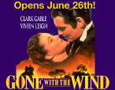
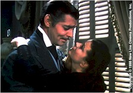
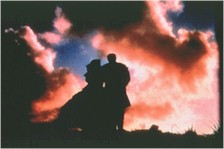

Contents | Features | Reviews | News | Archives | Store |
 |
|
| Movie Credits | Buy It! |
Gone With The Wind
Review by Carrie
Gorringe
Posted 26 June 1998
|  | Directed by
Victor Fleming Starring Clarke Gable, Vivien Leigh,
|
The umpteenth re-release of the Victor Fleming 1939 classic, Gone With the Wind, which New Line studios has just mounted, has been accompanied by so much ballyhoo (on Time-Warner-owned cable stations, at least), that the destructive power of Sherman’s March across Georgia seems like a mere leaf cast about in a light breeze by comparison. The timing of the re-release is immaculate, set as it has been against the American Film Institute’s "100 Greatest Films" program (for those who care about such things, GWTW ranked forth). As befitting a great cultural gem, a new setting was deemed necessary. For an outlay of ten million dollars, we have been told, Ted Turner (GWTW’s de facto owner) has restored the original aspect ratio, enriched the Technicolor and added a digital soundtrack. Hence, the various breathless declarations in the advertisements are promising us a better GWTW than even 1939 audiences ever were privileged to experience.
After viewing the print offered up in Seattle as evidence of money well-spent, this reviewer has to conclude that the results are most decidedly mixed. The reformatting of GWTW to its original dimensions is a welcome sight; prior to this fix, apparently, most of the top third of the frame was cut off as screens became longer and narrower during the widescreen revolution. Now, the scenes of martial destructiveness have been rendered more visually disturbing and poignant than ever, as originally intended, by the sheer weight of expanse.
In terms of color correction, however, it must be said that the Seattle print must have survived the aspect-ratio correction but bypassed the color bath. Put more succinctly, this reviewer has seen better resolution from worn-out Technicolor prints shown on late-night television. The colors are so muted that Natalie Kalmus, Technicolor’s so-called chief "visual consultant," from the 1930s until the mid 1950s would never have allowed this wan facsimile to be released under her imprimatur (Kalmus’s love of bright, supersaturated primary colors is almost notorious, as they played up the obvious strengths of the color process; if you were a filmmaker during her reign and you wanted to use Technicolor, her word was law, as anyone who has seen Technicolor films made during that period will affirm. Kalmus, by the way, had no formal training in either photography or art; she was given this position as a busy-body, make-work project by Herbert Kalmus, her ex-husband and the inventor of Technicolor). The color on this print is less saturated than whitewashed. By no means could this have been attributed to faulty projection, because the print used in the television advertising displayed all of the florid color one would expect of a Kalmus-supervised print.
More inexcusably, the print displayed signs of having bypassed the final inspection stage also, there being several grotesque emulsion scratches running amok throughout. When the camera pulls back after Scarlett’s iron-willed declaration that "As God is my witness, I’ll never go hungry again" and Max Steiner’s music swells to appropriately stentorian levels on the soundtrack, the swirls of burgundy twilight against which she is silhouetted are not only faded to a pale sienna, but an ugly green blob emerged from an underlying level of the negative. Needless to say, the emotional and symbolic aspects of the scene are completely undermined. Again, such an occurrence would be excusable in the process of restoring a film of this age, except for the fact that a flawless version of that very shot appears in the television advertising. While it would be unfair to insist upon complete perfection in every 240-minute print that Fine Line released, it would have been a better idea to have concentrated the financial resources into the qualitative rather than the quantitative segment. Fewer and better should have been the underlying operational motto, but, of course, there’s not much money to be made at that game.
Unfortunately, this may be your only chance to see GWTW on the large screen and, regardless of the number of times you’ve seen it on television, this is really the only way to see the film. Undeterred by the distractions of the refrigerator and incandescent lighting (if not by the impromptu bathroom break), the film’s characterizations, and the talented interpretations thereof, are thrown into brilliant relief. Go to be emotionally enriched by an important and rare aspect of film history, but don’t expect to be dazzled by the muted technology. In this case, attendance is more an act of support for the concept of cinema as storyteller than as visual marvel. GWTW deserves better than this shameful misrepresentation of its strengths..
Contents | Features | Reviews | News | Archives | Store
Copyright © 1999 by Nitrate Productions, Inc. All Rights Reserved.